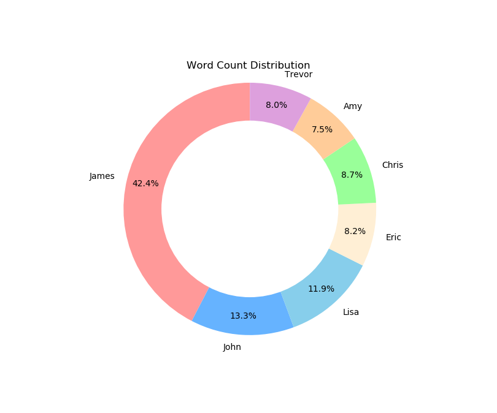
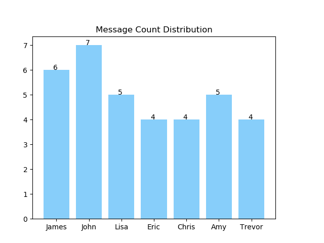
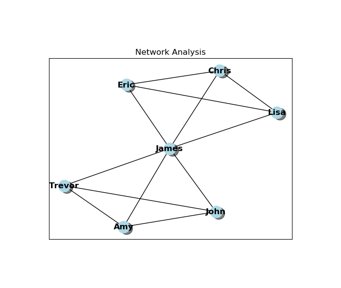
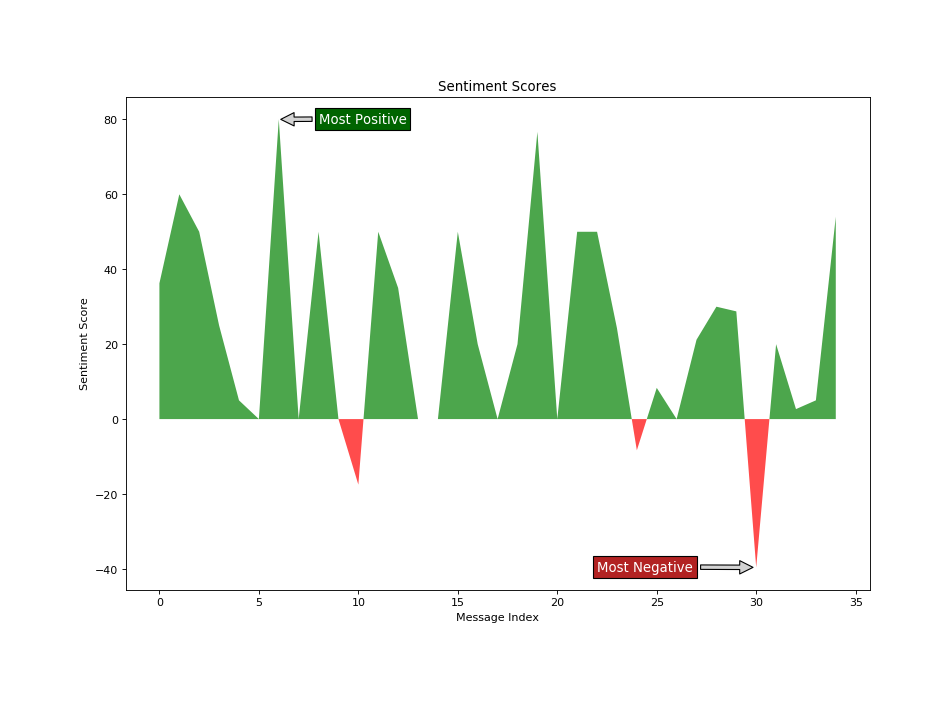
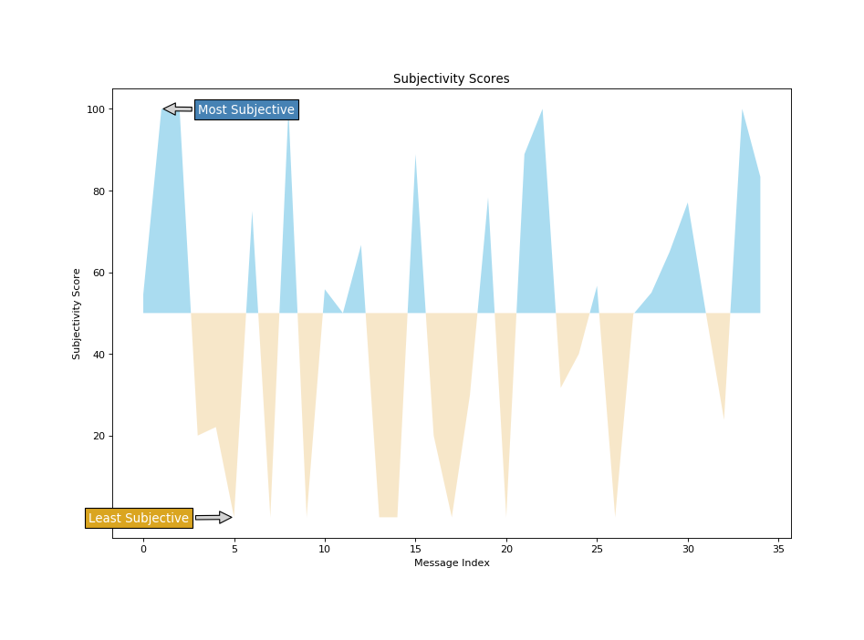
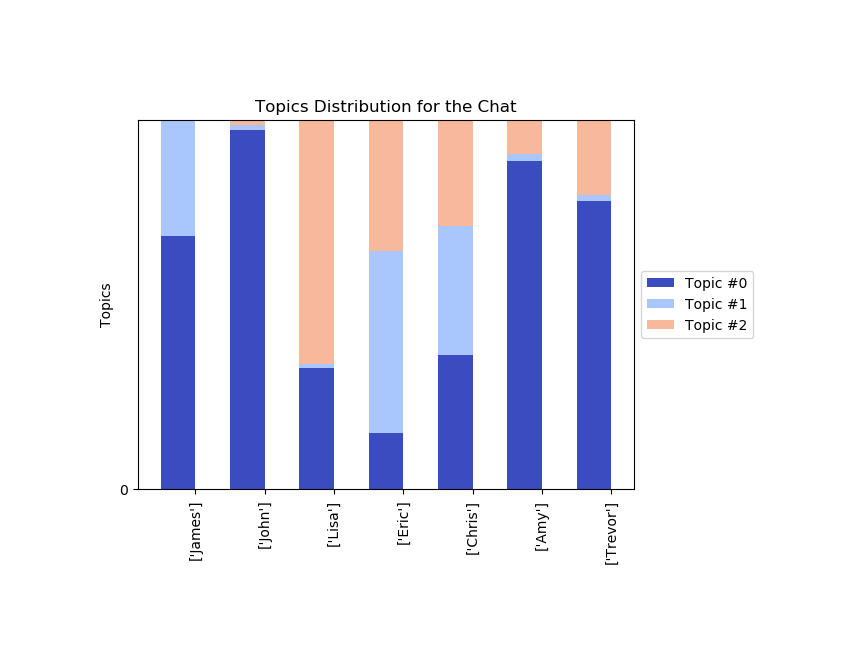

Team Chat Analyzer
July, 2020
Python Sentiment Analysis Topic Modeling
GitHub Repo  This project is a team chat analyzer that reads a team chat history and outputs various insightful NLP metrics. As the pandemic quickly shifts the working paradigm from offline to online and from in-person to remote, we might feel more distant from our co-workers, teams and company cultures. However, the new online working paradigm actually provides more text data than ever. If analyzed effectively, the data can reveal more insights about our teams than we ever know.Message count distribution 
Network analysis 
Sentiment analysis 
Subjectivity analysis 
Topic modeling 